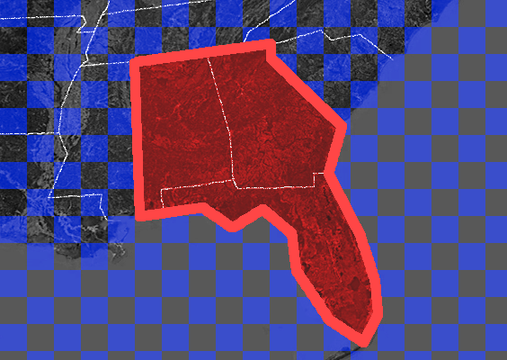

The Roadblock To Banning Conversion Therapy In The US
15 November 2022

"A satellite image illustrating the Great Plains" by William L. Farr is licensed under CC BY-SA 4.0 and was modified by us
Several years ago in Florida, 2 conversion therapists sued Palm Beach county over their ban on the harmful practice of conversion therapy for minors. They argued that the ban violated their right to freedom of speech. While they weren't able to block the law at first when they appealed to the circuit court, the court agreed in a 2-1 decision, and the ban was struck down. Unfortunately, it gets worse, because the circuit court had jurisdiction over Florida, Georgia, and Alabama, any attempt to ban conversion therapy in those states would be halted too. This reveals a major roadblock to banning conversion therapy, conservative judges striking bans down.
Conversion therapy is the pseudoscientific practice of trying to remove someone's LGBT+ identity. It has been widely discredited by medical organizations and evidence shows it's ineffective. On top of that, the intervention is regarded as harmful. Because of the issues with conversion therapy, many jurisdictions have banned performing it on minors. Sadly, some of these bans may now be at risk in the US.
The events in Flordia may take place around the country if we aren't careful. If lawsuits happen in places with conservative judges, even more bans may be struck down. The conservative Supreme Court makes this situation even worse. If a lawsuit made its way to the high court and they accepted the case, it seems likely the conservative majority would rule to invalidate a ban. This would lead to every conversion therapy ban in the country being negated.
Fortunately, not all judges are averse to conversion therapy bans, judges in the 3rd circuit and 9th circuit courts have ruled that banning conversion therapy is constitutional.
So how do we move forward? Well, there are a few things that could happen. First of all, people should be careful in appealing a decision if they are unlikely to win. Another thing would be decreasing the surface area to attack, while conversion therapy bans are still a good thing, people should reconsider them if they are unlikely to have many benefits (for example, a ban in a small city would be ineffective because people could just leave the city limits) and if they are in an area with conservative judges. Though there might not be too much we can do until the Supreme Court gets less conservative.
In conclusion, conversion therapy bans may be at risk, especially because of the Supreme Court. To protect LGBT+ youth, this roadblock must be overcome.
https://www.courthousenews.com/11th-circuit-splits-with-sister-courts-on-gay-conversion-bans/
https://media.ca11.uscourts.gov/opinions/pub/files/201910604.pdf
https://eu.palmbeachpost.com/story/news/2020/11/20/panel-ruled-against-palm-beach-countys-ban-conversion-therapy/6360197002/
https://www.courthousenews.com/gay-conversion-therapy-ban-upheld-by-9th-circ/
https://www.abajournal.com/news/article/3rd_circuit_upholds_ban_on_conversion_therapy_for_underage_gay_youths_will
{kind=link}